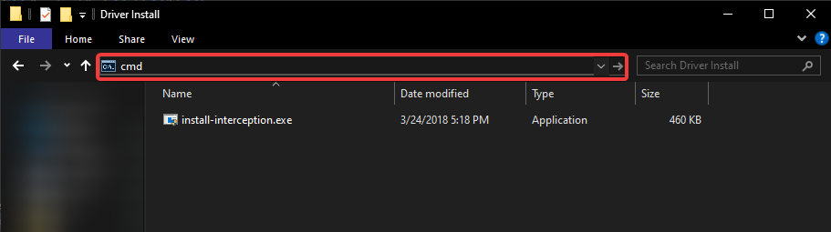
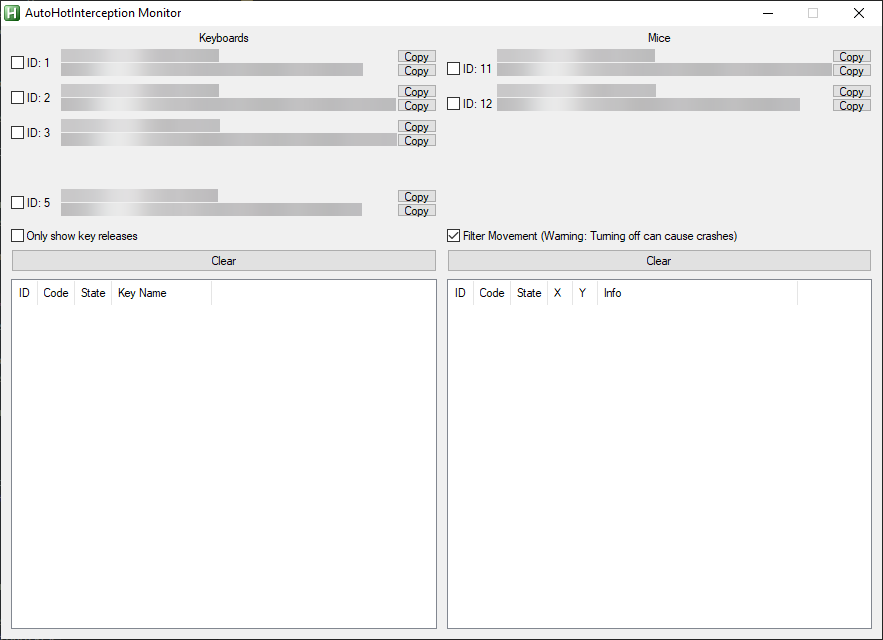
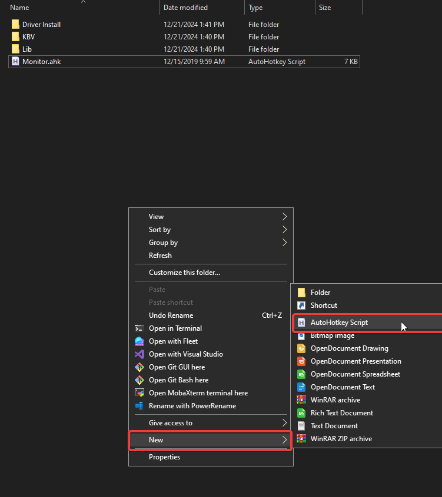

All files needed to start your project can be found here
-
Installing Interception Driver
Interception drivers and other resources used in MIM can be found at the bottom of this page.Download the project files from above, unzip the file and navigate to:
Open the navigation bar in your file explorer and type:MIM pack --> Driver Install
 Then press entercmd
A cmd window will open and you can type the following to install the interception driver:install-interception.exe /install
You will be prompted for administrator privillages, click yes, once it finishes you can close cmd and restart your computer.
-
Finding Your Input Device
If autohotkey is not installed you can install it here, make sure to install v1.1.After autohotkey is installed find 'Monitor.ahk' and open it.
A screen like this should show up. If it doesnt try installing AHK again:  Toggle the 'Only show key releases' option and depending on weather your using a keyboard or a mouse as your secondary input device (for farming) under the Keyboards or Mice section, toggle one device at a time and try pressing a key until you find the correct input device.
Once you have found the correct input device copy the 'VID/PID' it will look something like this:0x0ABC, 0x0BCA
Save this for later, you will need it for your script. -
Setting Up Your AHK Sript
If you setup your AHK script incorrectly and are not physically holding down as many keys as your farm requires you ARE BREAKING THE RULES.As long as you follow the next couple steps excactly the setup will guide you through a method that is fully safe and complies with the hypixel rules.Create an AHK script by right clicking the ROOT directory (of the project) clicking new, autohotkey script
 Enter any name you want and then click create.
To edit the script right click it and click edit script. Alternatively if you have VSC or notepad++ right click open with>VSC/Notepad++
Paste the following template in, all of the following code is required for most scripts to work.#SingleInstance force #Persistent #include Lib\AutoHotInterception.ahk #NoEnv SetWorkingDir %A_ScriptDir%
-
Templates
Reminder to insert your own keyboard ID in the keyboardId section.This template/example Uses the 'space' and 'alt' keys to hold 'w' and 'space'#SingleInstance force #Persistent #include Lib\AutoHotInterception.ahk #NoEnv SetWorkingDir %A_ScriptDir% ; Global variables global AHI := new AutoHotInterception() global MinecraftWindowTitle := "Minecraft 1.8.9" ; Get keyboard ID and subscribe to space and alt keys keyboardId := AHI.GetKeyboardId(INSERT YOUR KEYBOARD ID) AHI.SubscribeKey(keyboardId, GetKeySC("space"), true, Func("handleSpace")) AHI.SubscribeKey(keyboardId, GetKeySC("alt"), true, Func("handleAlt")) ; Handle space key handleSpace(state) { global MinecraftWindowTitle IfWinExist, %MinecraftWindowTitle% { if (state = 1) { ControlSend,, {space down}, %MinecraftWindowTitle% } else { ControlSend,, {space up}, %MinecraftWindowTitle% } } } ; Handle alt key handleAlt(state) { global MinecraftWindowTitle IfWinExist, %MinecraftWindowTitle% { if (state = 1) { ControlSend,, {w down}, %MinecraftWindowTitle% } else { ControlSend,, {w up}, %MinecraftWindowTitle% } } }